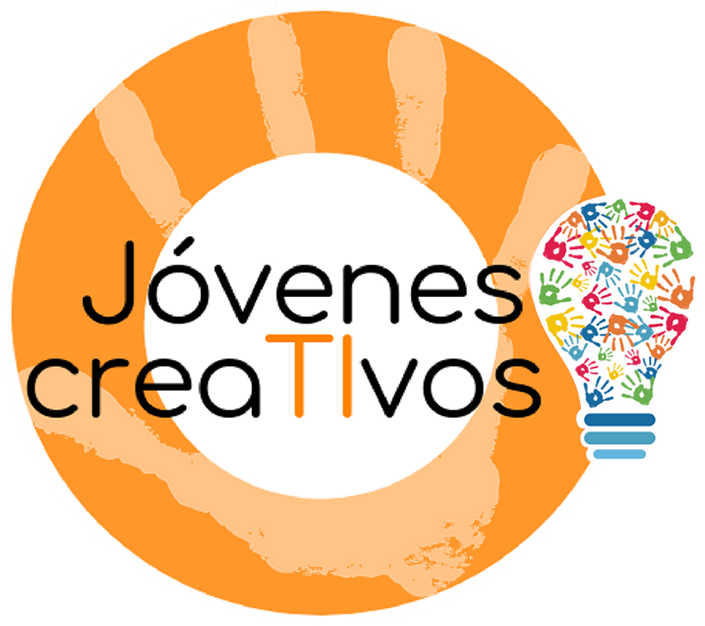
Samuel David Rojas Monroy
la ingeniería detrás del soporte
En breve. En junio de 2026 recibí un plan de 10 semanas para convertir el soporte en un «catalizador digital». A noviembre, la automatización y la integración de datos están hechas y superadas, y la transferencia al equipo termina en diciembre.
Pasa el mouse sobre cada rol para ver el salario de mercado y sobre cada certificado para verlo completo, sin descargar nada.
Cifras del repositorio y del servidor n8n, corte 13-nov-2026. Sin datos personales de participantes.
Qué se pidió y dónde vamosPlan de onboarding · 10 semanas
Sem. 1–2 · Diagnóstico
HechoInventario de plataformas, servidor y repositorio documentado. La adopción de IA en el equipo avanza con Valeria como piloto.
Sem. 3–5 · Automatización
Hecho y superado48 flujos activos: asistencia, Zoom, Q10, oportunidades, avisos y correos.
Sem. 6–8 · Analítica
Hecho con otra herramientaEn lugar de Power BI: base central y un Panel de Datos público, sin licencias.
Sem. 9–10 · Transferencia
En curso · diciembre53 guías y un panel de diagnóstico. Faltan la capacitación del equipo y el ensayo del servidor de respaldo.
Gestión de participantes
HechoForms, Sheets, Q10 y Zoom consolidados y un reporte de riesgo. Las alertas automáticas de deserción están pendientes.
Workspace optimizado
Hecho en su mayoríaConsolidación en Sheets, correos masivos con control de bajas y rebotes y asistencia de Zoom. Las respuestas automáticas en Gmail están pendientes.
Atención por WhatsApp
Construido · en pausaEl bot quedó listo; está en pausa mientras se define la plataforma.
Difusión y convocatorias
En cursoOportunidades publicadas solas en la web, campañas NOVA y convocatoria de Uruguay. La lectura automática de hojas de vida está pendiente.
Dashboard de control
HechoPanel de diagnóstico con el estado de cada flujo.
Archivos y grabaciones
En esperaDiseñado y documentado; espera permisos de administrador.
Nueve roles en un solo cargoAutomatizaciones, datos, paneles y documentación, en coordinación con Cristian (página web de reportes). Pasa el mouse (o toca) para ver la captura del salario promedio de cada rol en Colombia
Ingeniería de datos
Más de 7 fuentes (Q10, Zoom, Sheets, Forms, Emoflow, MongoDB e históricos) en una sola base.
Administración de BD
Diseño, migraciones, permisos por rol, vistas privadas y respaldos en Supabase.
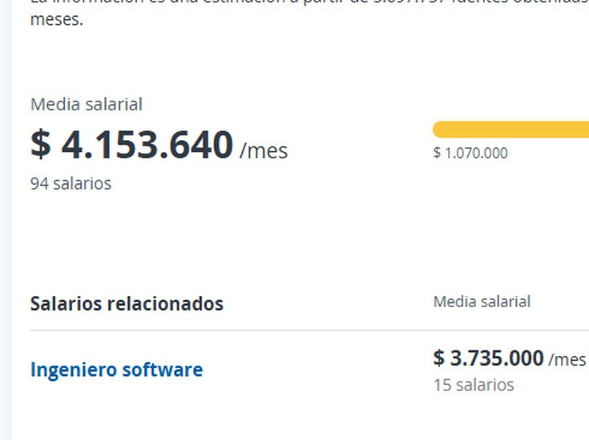
Análisis de datos
Cruces de asistencia, avance, retiros y riesgo por programa.
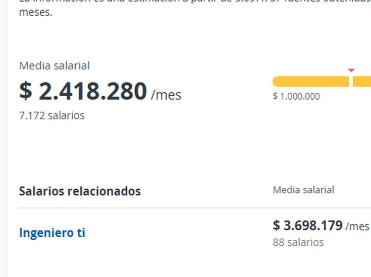
Ciencia de datos
Identificación de personas por correo o cédula y pruebas automáticas de integridad.
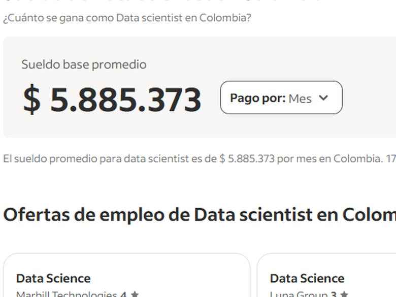
Automatización
48 flujos en n8n que corren solos, a la hora exacta.
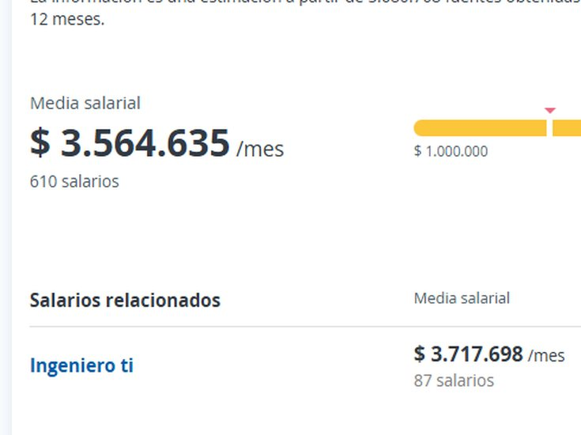
Desarrollo back-end
390 scripts en Python con las API de Zoom, Q10, Google y Telegram.
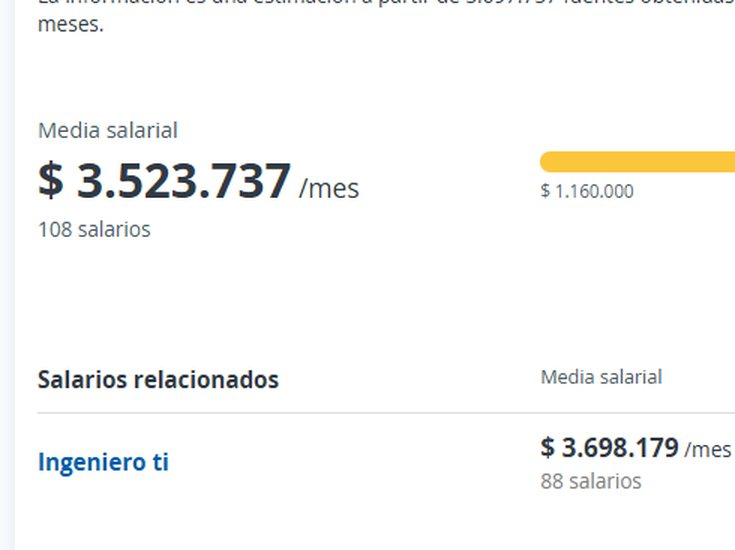
Desarrollo front-end
Panel de Datos público y paneles internos (Next.js, Vercel).
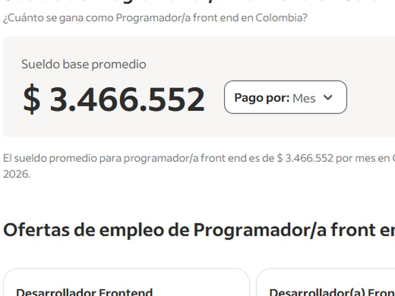
Nube y DevOps
Servidor propio, seguridad, alertas, respaldos y contingencia.
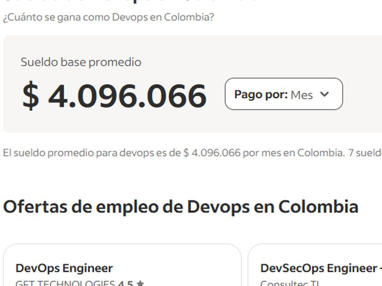
Manejo de IA
Construyo, reviso y documento con IA, y acompaño su adopción en el equipo con Valeria como piloto.
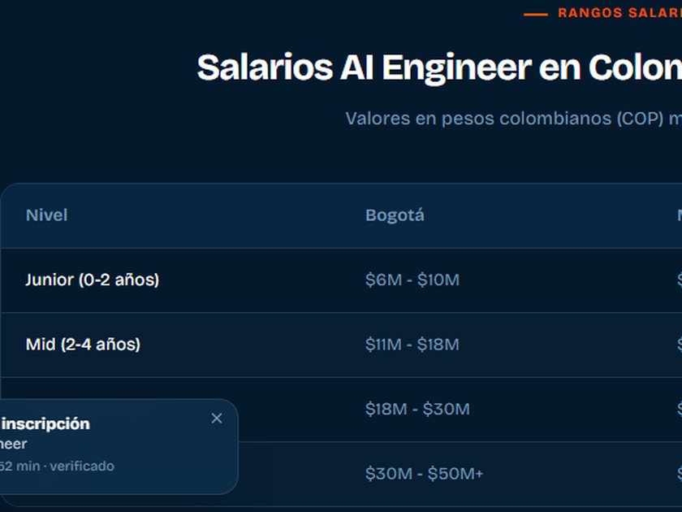
FDE (opcional)
Forward Deployed Engineer: llevar estas soluciones a otras organizaciones. Ver la sección 7.
Fast Company: las ofertas subieron 800 %
Fortune, sep-2026
Son promedios de todos los niveles en Colombia, excepto Manejo de IA (rango junior) e Ingeniería de datos (1–4 años). El técnico de soporte gana en promedio $1,42 M (Computrabajo): es el rol más cercano al cargo contratado.
Cada alerta dice qué hacerTelegram + 53 guías de recuperación
correo-alias-diario (exit 1).Revisar ejecución en n8n; no compartir salida con datos individuales.
📘 runbooks/correo-alias-diario.md
Ningún flujo falla en silencio. Cuando algo sale mal, llega un mensaje a Telegram, y su última línea es el nombre del archivo de la guía que explica cómo resolverlo.
Así, quien se tome el tiempo de leer la documentación entiende cómo funciona todo el entorno, sin depender de una sola persona. Cada guía sigue la misma estructura:
CertificadosPasa el mouse para verlo; haz clic para ampliarlo y usa las flechas para pasar al siguiente
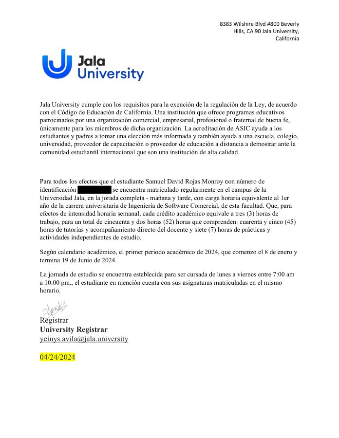
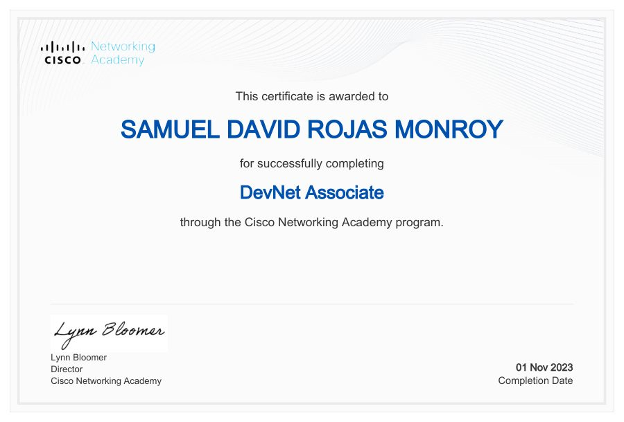
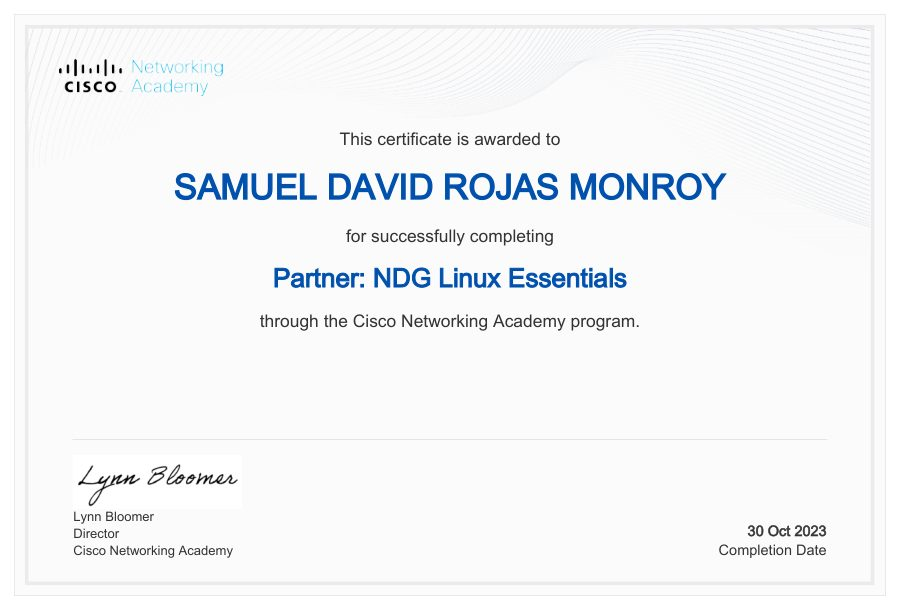
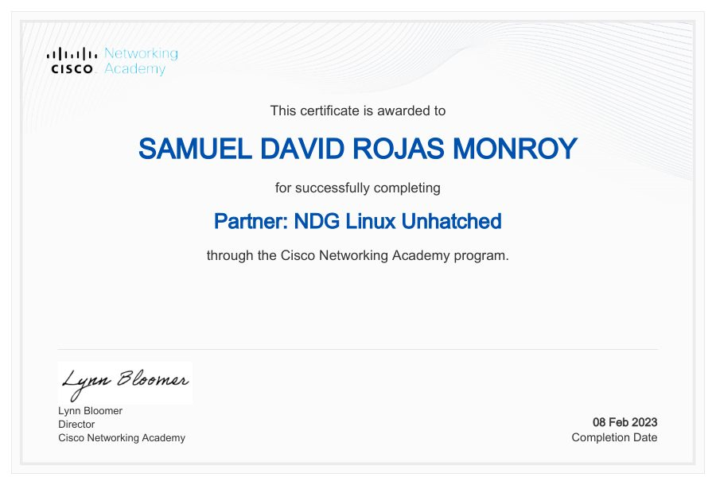
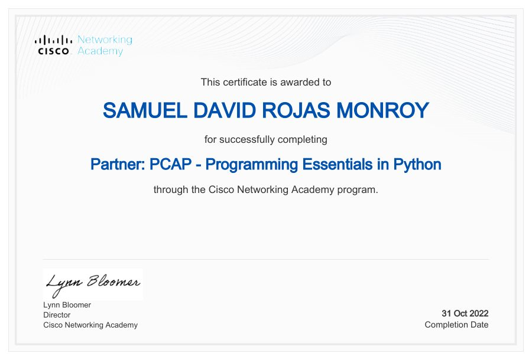
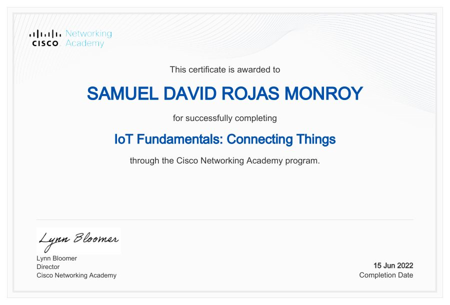
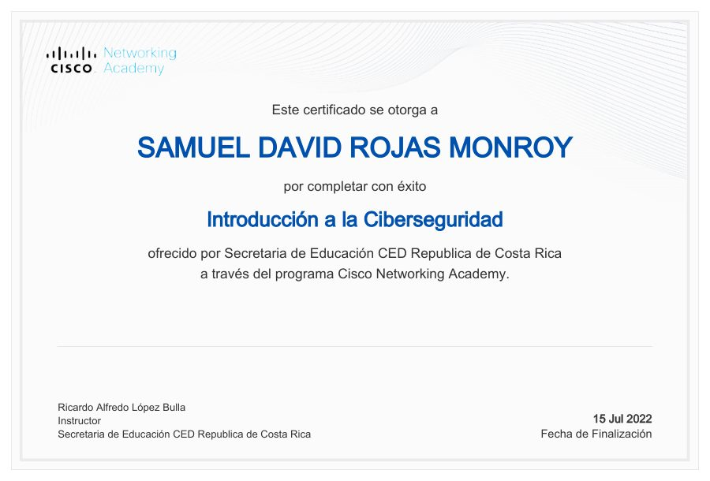

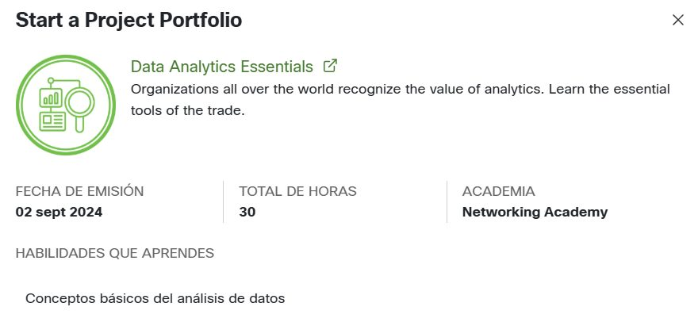
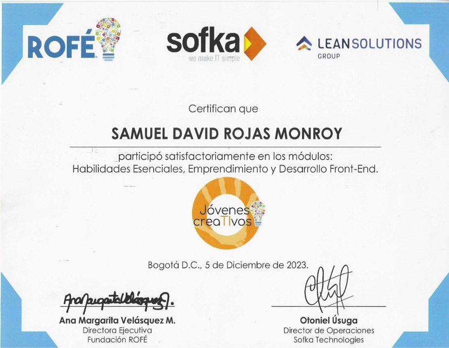
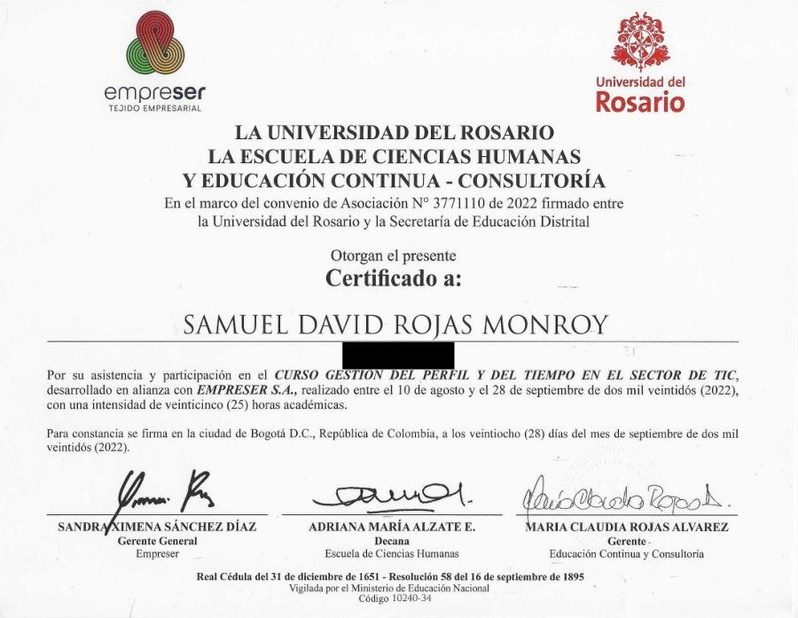

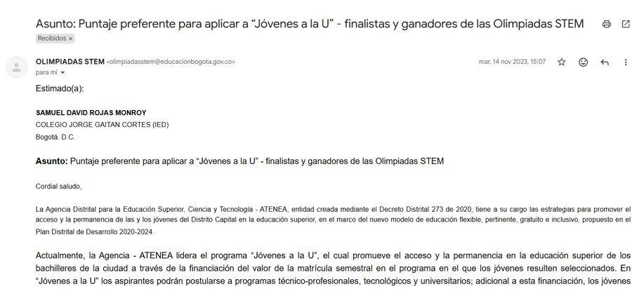
Cómo se organizó el trabajoVista rápida del plan recibido y de cómo se llevó a la práctica
El plan de onboarding definía con claridad los objetivos, pero pedía mucho para el punto de partida y no alcanzaba a reconocer las necesidades reales de la Fundación. La parte técnica de cómo lograrlos (arquitectura, herramientas y accesos) la fui diseñando y organizando por mi cuenta, sin una guía técnica ni alguien que revisara el desarrollo.
Trabajo en coordinación con Cristian, que desarrolló la página web (front-end y back-end) que facilita la entrega de reportes y la captación de información. Las automatizaciones, la base de datos, los paneles y la documentación van por mi cuenta.
- Arquitectura propia, sin costo de licencias.
- Trazabilidad: cada tarea en Linear, cada cambio en Git y cada decisión escrita.
- Recuperación: cada alerta apunta a su guía.
- IA como multiplicador: asistentes de programación con IA para construir, revisar y documentar, siempre revisando antes de llevar algo a producción.
- Adopción de IA en el equipo: principalmente con Valeria, que será la piloto: una persona ajena al desarrollo con quien afinaremos las herramientas antes de llevarlas al resto del equipo.
Por qué primero la estructura y después la IA
Prompts para que la IA ejecute cada proceso
Posible desde el primer día, pero con una relación costo-beneficio muy baja: la IA gasta tokens (dinero) en ordenar información ejecución por ejecución, algo que no le corresponde.
Primero la estructura, después la IA
Así entendimos las verdaderas necesidades de la Fundación y el plan se volvió viable: cada consulta a la IA cuesta menos y es más eficiente y trazable, igual que toda la información que va llegando.
- Un solo lugar: la información ya no está repartida en hojas sueltas, y está más segura.
- Copias de seguridad automáticas todos los días.
- Permisos por rol y accesos de solo lectura: una persona que todavía no domina la IA puede consultar, pero no ejecutar algo que dañe la base de datos.
- Menos errores manuales: lo que antes se copiaba a mano ahora lo hacen los flujos.
El plan de onboarding · pasa el mouse para verlo; haz clic y usa las flechas ‹ › para recorrerlo


Documento «Necesidades de la Fundación en IA y automatización» · resumen
Cohortes, asistencia, consolidación en tiempo real, indicadores y alertas.
Hecho en su mayoríaLectura de hojas de vida, ranking, entrevistas y correos automáticos.
Por hacerPágina web, plataformas de formación y WhatsApp.
WhatsApp construido · en pausaCampañas, correos masivos y segmentación.
Correos y campañas listosOrganización de archivos y búsqueda inteligente.
En espera de permisosGmail, Sheets, Drive, Calendar y Zoom.
Sheets y Zoom listosDashboards, indicadores y reportes en tiempo real.
Panel de Datos públicoCompromiso: el soporte siempre queda cubiertoMedio tiempo + automatización
- Con el medio tiempo y las automatizaciones de n8n, las labores de soporte se cumplen con más precisión que a mano: los flujos corren a la hora exacta, no olvidan y avisan si algo falla.
- Me comprometo a que las plataformas de la Fundación queden actualizadas y a que ninguna necesidad quede desatendida.
- Tengo un plan de acción estructurado sobre hacia dónde dirigir el esfuerzo, con prioridades y tareas registradas.
- No sería necesario contratar a alguien que me reemplace en estas labores.
- Si la Dirección lo prefiere, puedo tomar las clases desde la oficina. Así detecto cualquier necesidad en el momento: si es breve, la resuelvo ahí mismo; si no, la atiendo en mi jornada.
Lo que viene en desarrolloDe reaccionar a anticipar
Hoy, muchas veces nos enteramos de un retiro o de un disgusto cuando el monitor lo recuerda y lo reporta. La meta es saberlo en el momento, con fecha y contexto, y avisar antes de que un caso se vuelva crítico.
Primeras alertas
Reporte diario para la líder de monitorías (avance, asistencia y días en riesgo de cada estudiante) y alerta semanal de deserción con el avance en Q10.
Mejores canales de comunicación
Enlace de baja en todos los correos masivos y registro de cada envío por canal: qué se mandó, a quién, cuándo y con qué resultado. Rebotes y bajas ya se guardan.
Las respuestas de los estudiantes, en un solo lugar
Correos, encuestas y formularios (y WhatsApp, cuando se apruebe la plataforma) guardados en la base, junto al resto de su historia.
Alerta temprana integrada
Asistencia, cámara, avance en Q10 y respuesta a los canales, juntos, para avisar a tiempo de los posibles casos críticos. Con suficiente historia, el siguiente paso es predecirlos.
Base que ya tenemos: la primera ola de la encuesta de satisfacción de JC la respondió el 78 % (647 de 832).
Rol FDE (opcional)Una idea para conversar más adelante, sin ninguna prisa
Solo como idea para más adelante, cuando sea un buen momento. El Forward Deployed Engineer lleva soluciones de automatización e IA a otras organizaciones, adaptadas a cada cliente. Es uno de los roles de mayor crecimiento del mercado tecnológico: las ofertas subieron más de 800 % en 2025, según datos de Indeed citados por el Financial Times.
Lecturas: Fast Company · Fortune · Computerworld
No le resta al soporte. Si hay trabajo de FDE, lo que se aplaza son las entregas de desarrollo, nunca el soporte. El soporte está cubierto con FDE o sin él; doy mi palabra.